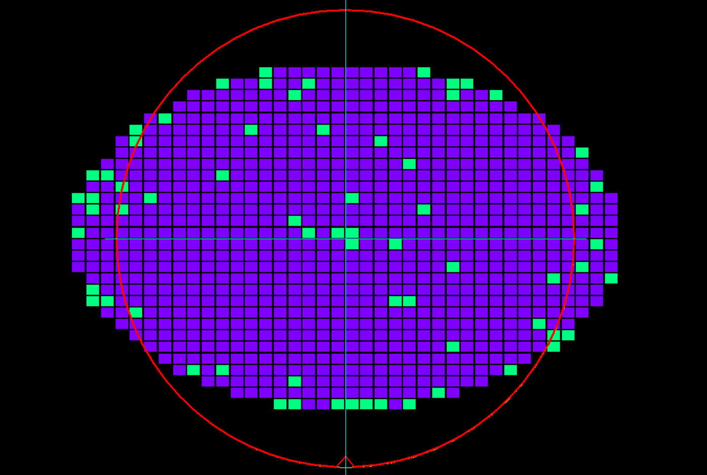
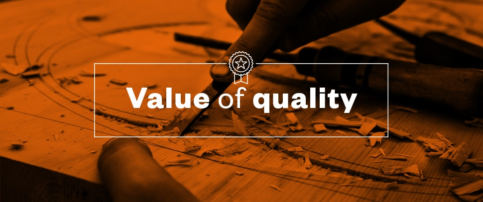

Machine Learning Project
Built a classification methodology to predict the quality of wafer sensors based on the given training data with
590 sensors available in a single wafer.
Applied Data Ingestion techniques to produce a CSV file for further EDA
(Exploratory Data Analysis), clustering and hyperparameter tuning.
Algorithms used – KNN Means Clustering, Random Forest and XGBoost Classifier to find best AUC score.
Deployed the project in Microsoft Azure and Amazon AWS cloud service.


Built a web scraper using a Python IDE (Integrated Development Environment) and MongoDB that collects
the reviews of a product from the internet and deployed the application to Heroku cloud. Discovered that Web
Scraping can be used in aggregating marketing data, competitive pricing, financial insights.
Includes tabular and matrix visualization along with funnel chart, pie chart,
scatter plot, sand dance plot and Q&A Feature.
An audit of the business infrastructure done through comparison between sales and profit. Performance in terms
of region, products, customers.

Analysed 3 years of data to try and measure the usefulness or worth of the products and services given to the customers of MDIC organisation.
A detailed analysis of financial consumer complaints. Comparison between different sources of the complaints and their region.
Use of hex tile maps to show complaints by states.

Basic analysis of the global covid cases and population infected.